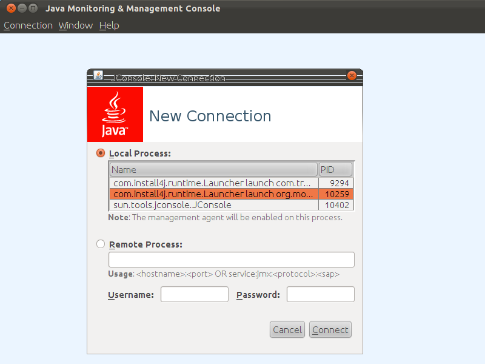
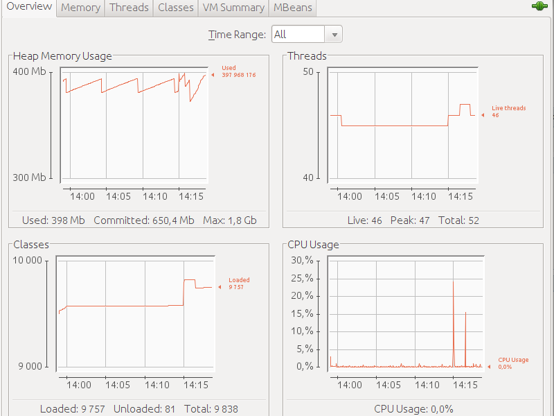
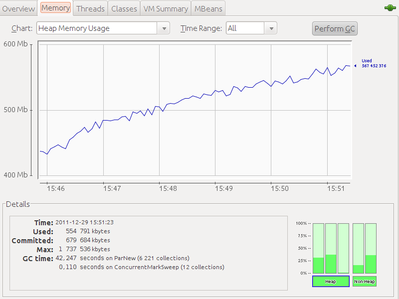
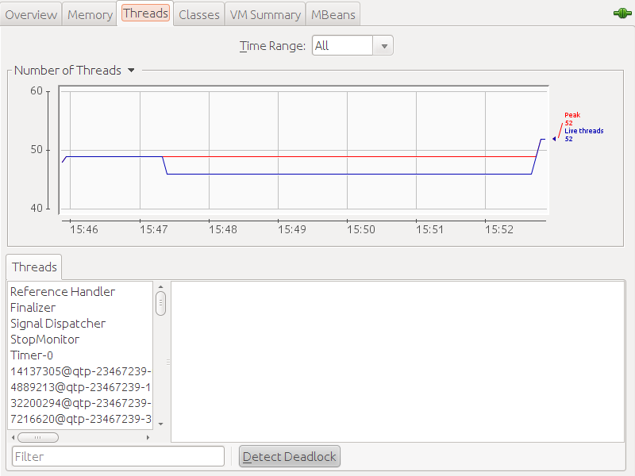
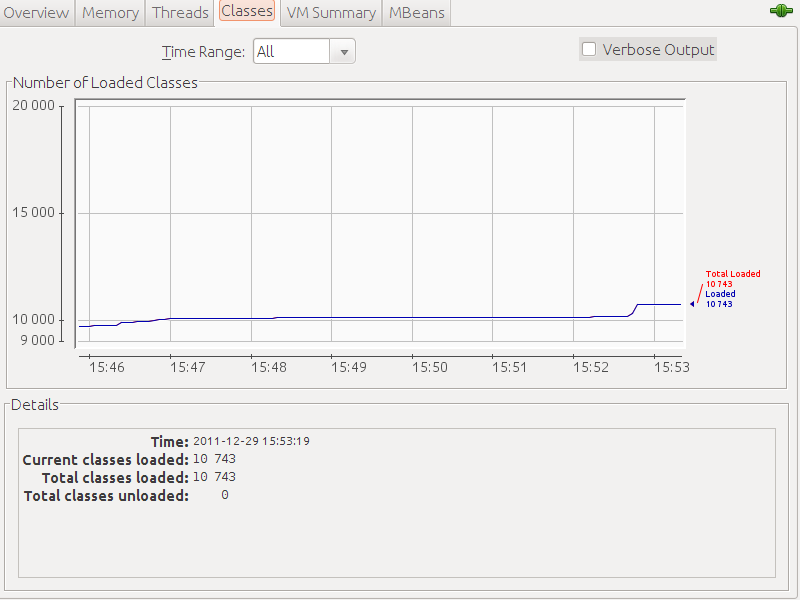
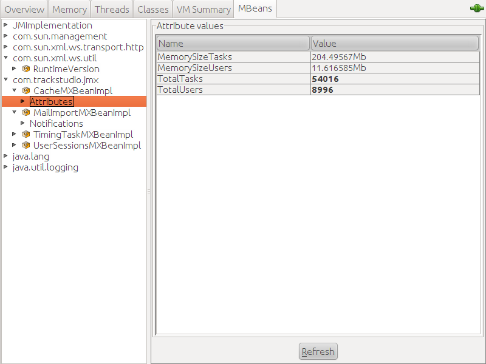
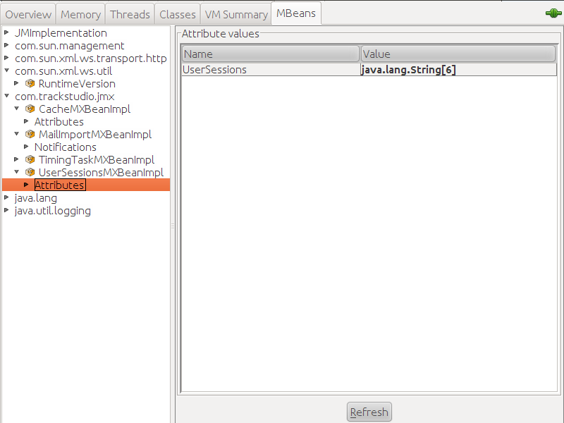
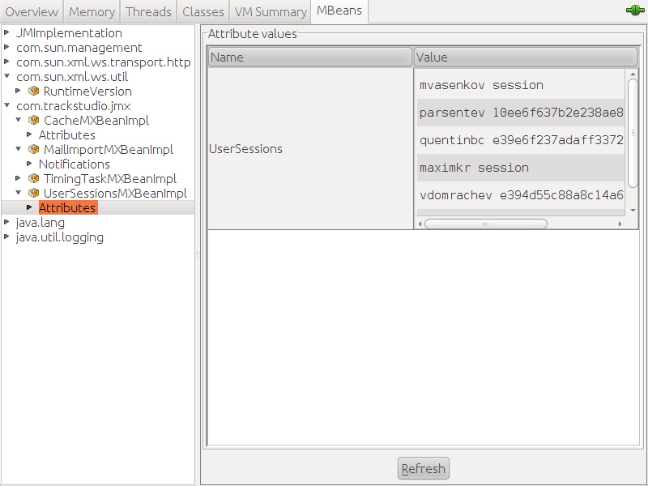
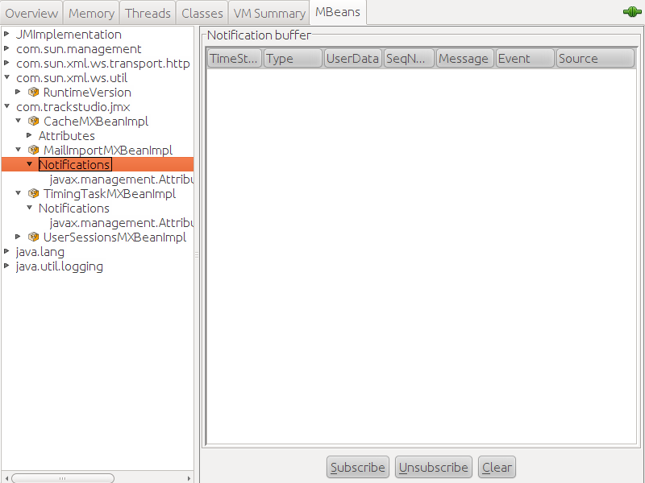

|
<< Click to Display Table of Contents >> Navigation: Rus > Руководство администратора > Мониторинг работы TrackStudio с помощью jconsole |
В Java встроено расширение для управления (JMX), через которое с помощью графической утилиты jconsole вы можете посмотреть, как ведет себя TrackStudio в работе, на что расходуется память, как работает кэш задач и пользователей, импорт электронной почты, рассылка уведомлений и интеграция с SCM.
Никакого дополнительного программного обеспечения для мониторинга не потребуется.
Запустите TrackStudio. После этого в консоли выполните команду jconsole. Откроется окно с вариантами соединения:

Выберите соединение com.install4j.runtime.Launcher.launch.org.mortbay.start.Main
После соединения вы увидите вкладку Overview, на которой отображены: расходование памяти, количество тредов, количество классов и использование процессорного времени.

На вкладке "Memory" показано использование памяти приложением. Здесь же вы можете освободить часть памяти, нажав на кнопку "Perform GC".

На вкладке "Threads" показано количество потоков, выполняемых в настоящее время

На вкладке "Classes" показано количество классов, загруженных в виртуальную машину.

Перейдя на вкладку MBeans, вы можете получить информацию о состоянии различных компонентов TrackStudio. Для этого выберите классы, относящиеся к "com.trackstudio.jmx"
В CacheMXBeanImpl вы увидите, сколько в системе зарегистрировано задач и пользователей. Какой размер информация о них занимает в памяти.

UserSessionMXBeanImpl показывает, сколько в системе в настоящее время открыто сессий.

Если кликнуть на строку в колонке Value, можно посмотреть конкретные параметры этих сессий

В данном случае в системе открыто 6 сессий пользователей: mvasenkov и maximkr зашли через веб-интерфейс, а остальные сессии созданы системой для рассылки уведомлений.
MailImportMXBeanImpl показывает, сколько в данный момент происходит процессов импорта задач из электронной почты
